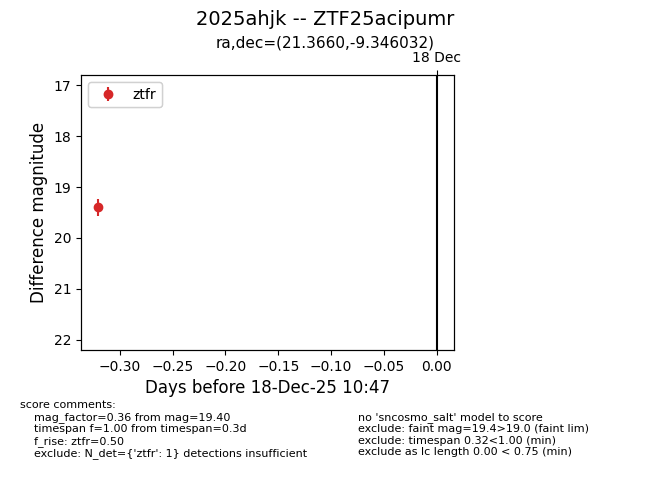
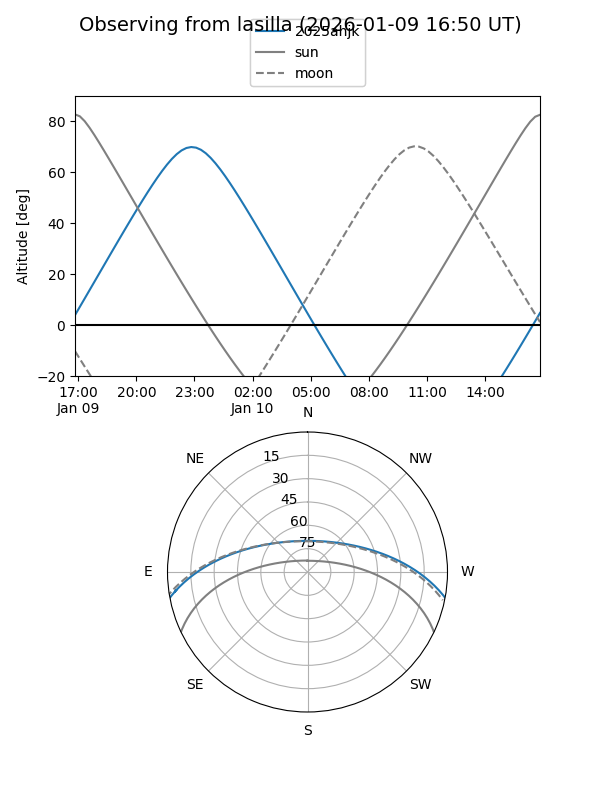
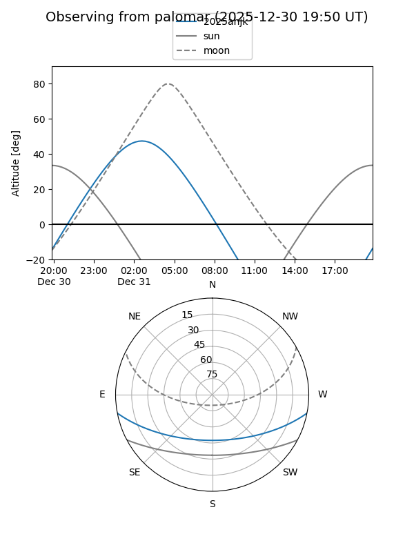
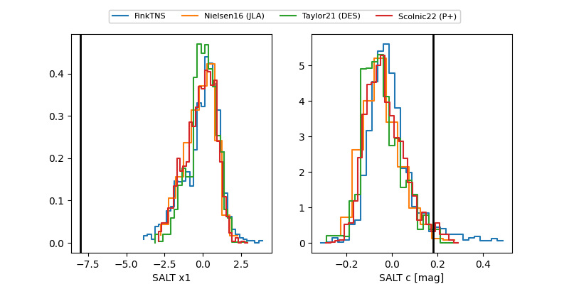

2025ahjk
Target 2025ahjk at 2025-12-31 18:00
Aliases and brokers:
FINK: link
Lasair: link
ALeRCE: link
TNS: link
YSE: link
alt names
ZTF25acipumr (ztf,fink_ztf)
2025ahjk (tns,yse)
Coordinates:
equatorial (ra, dec) = 21.3660,-9.34603
equatorial (HMS+DMS) = 01:25:27.85,-09:20:45.72
galactic (l, b) = (148.8425,-70.48659)
Flags:
Photometry:
last ztfg=19.39, ztfr=19.10
2 ztfg, 3 ztfr detections
Lightcurve

Visibility


Additional plots
